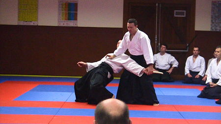

5ème FORMATION CONTINUE des CEINTURES NOIRES 
animée par Bernard BOUR, 3ème dan
le 06/06/09 à YUTZ
Voir les PHOTOS

____________________________________________________________________
4ème Formation Ceintures Noires du 18 avril 2009 à MANOM
animée par Jean-Michel FUMANERI, 3ème Dan
Voir l'album et le diaporama de Gaëtan Bolzinger du Club de YUTZ
____________________________________________________________________
3ème Formation Ceintures Noires
à MANOM avec Guy BEETS, 4ème dan
le samedi 28 février 2009
Voir la GALERIE PHOTOS
et d'autres photos sur le Blog de Clouange + VIDEO

_________________________________________________
2ème FORMATION CONTINUE des CEINTURES NOIRES avec Alain BACCO, 4ème dan
le samedi 13 décembre 2008 à TALANGE
56 participants

Voir la GALERIE PHOTOS
et le Blog de CLOUANGE.
_________________________________________________
1ère FORMATION CONTINUE des CEINTURES NOIRES
à REMILLY avec Corine MASSON-PAYEUR, CEN 6ème dan
le samedi 27 septembre 2008
Cliquer sur les photos pour agrandir.
Un exposé de Guy BEETS Président du Comité de Moselle sur les dernières informations fédérales. |
|
D'autres photos sur le Blog de CLOUANGE
{kind=link}
{kind=link}
{kind=link}
{kind=link}
{kind=link}
{kind=link}
{kind=link}